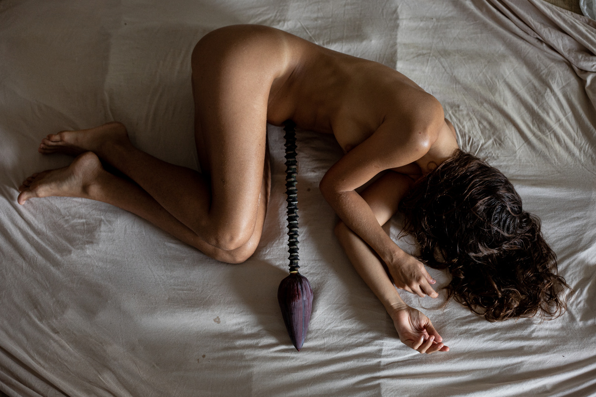
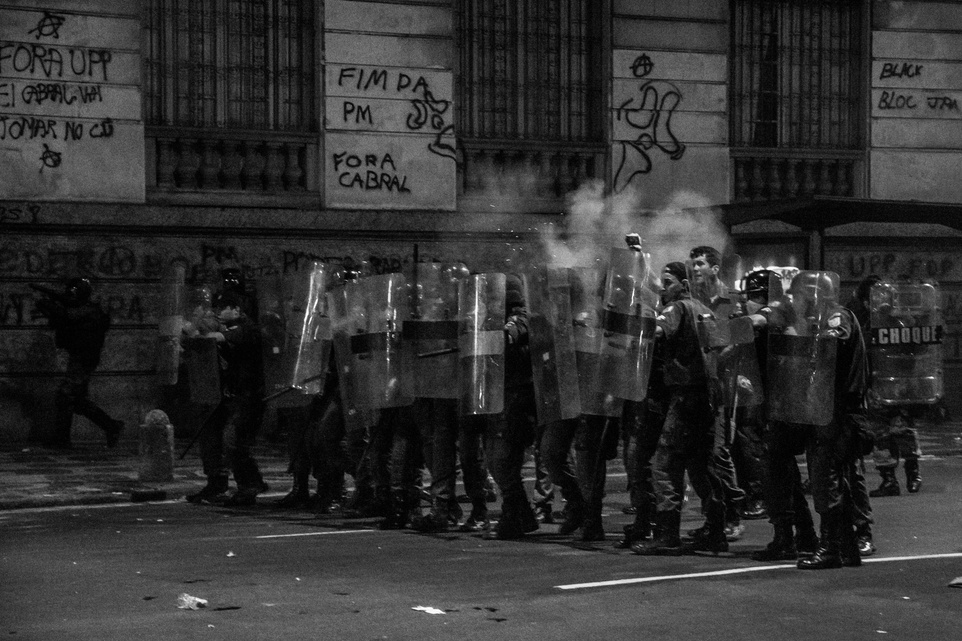

portfolio
Exposições
Em 2024, participou da exposição coletiva Enternecer, com curadoria de Bia Rodrigues e Soraya Albuquerque, no espaço cultural Casa 264.
Junto à performer Mar Mendes, cocriou o trabalho Cordão Umbilical, que integrou a exposição Conjunção, no Centro de Artes Hélio Oiticica.
Com a Coletiva Era, elaborou a exposição Origem, para o Festival WOW Mulheres do Mundo.
Em 2018 participou de exposição coletiva da ONG Artigo 19, sobre as chamadas Jornadas de Junho de 2013. A exposição aconteceu no Rio de Janeiro e em São Paulo.




Algumas das fotos participantes da exposição sobre as Jornadas de Junho, organizada pela ONG Artigo 19.